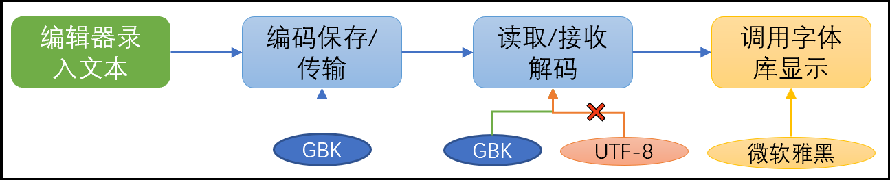
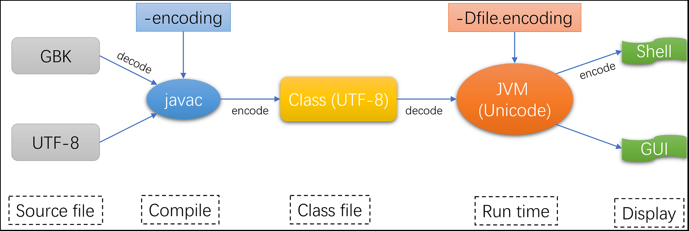
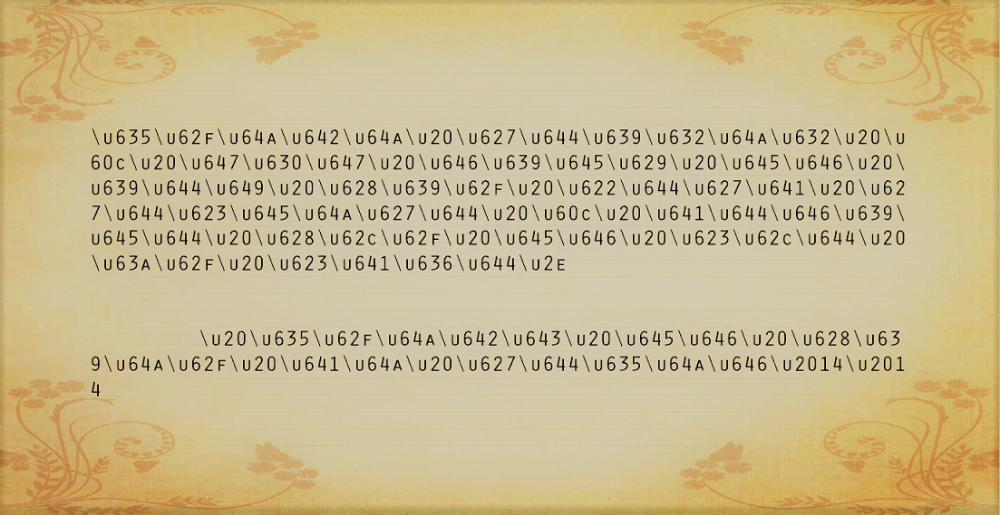

字符集与字符编码的故事
Contents
一、问题引出
1、计算机是如何处理文字的？
在计算机内部，所有数据都是以二进制形式存储的，就像这样:
很炫酷有没有？什么，你看不懂？It’s okay！我也看不懂，计算机能看懂就行。我们的文字也是这样按二进制被存储或处理的，因此需要一种机制将文字映射到二进制串上面，聪明的计算机先驱们发明了字符集这样的东西，他们将常见的字符编码到一张表中，每个字符对应一个唯一的数字，称为码位/码点/Code Point，就像这样。
码位仍然不是计算机可以直接存储的东西，还需要一种规范将其转变为二进制，并且要能还原回去，所以最直接的办法就是固定每个码位的宽度，不足的用0填充，这就是字符编码最简单的一种实现方式。
现在的字符仍然只是一个ID，在图形界面，它需要知道该怎么“画”出来这个字符，这就需要字体的支持，字体规定了一个字符的形状、大小等外观。字体设计时除了基本的图形，还有一个charmap，它记录了码位和“字体图形”的映射关系，这样就可以根据字符集对应的ID找到对应字体图形，最后由图形引擎将它绘制出来，这就是我们最终看到的文字。
2、中文是怎么被支持的？
计算机最初是美国人发明的，在设计字符集时仅考虑了拉丁字母和常见的符号，这个最初的字符集就是ASCII(American Standard Code for Information Interchange， 美国标准信息交换代码)，ASCII用7位来表示所有英文、基础符号共128个字符，一个字符占用1字节空间。后来一些国家发现自己用的符号在ASCII中没有，于是在127号之后位置加入了许多其他字符，这一步部分称为“扩展字符集”，这样1字节256个状态全被用完了。
再后来计算机进入了第三世界国家，例如中国，但ASCII已经没有位置支持其他文字了，于是我们便大刀阔斧建立自己的标准化字符集。我国的字符集有三个阶段，第一阶段是将127号以前的字符保留，127号之后的全部删除，两个连续127号之后的字符在一起表示一个中文字符，第一个字符范围0xA1~0xF7（高字节），后面一个字符范围为0xA1~0xFE（低字节），这样一共表示了7000多个简体汉字，其中还包括数学符号、希腊字母、日文假名和ASCII已经定义的字符。这就是第一代汉字编码GB2312。GB2312中，127号以前的字符（ASCII字符）称为半角字符，而扩充的中文和重定义的字母、标点符号称为全角字符（占2字节），这就是我们在输入法上看到的“太阳（全角）”和“月亮（半角）”的含义，全角和半角仅有前127个字符有差异，一般都使用半角输入，让英文和英文标点与ASCII一致。
第二阶段不再要求第二个字节（低字节）从127之后开始，只要第一个字节（高字节）大于127就表示一个汉字的开始，这样又扩展出近20000个新汉字和符号，这个字符集称为GBK编码。
中国是个多民族国家，很多少数民族有自己的语言体系，此后又在GBK编码基础上增加了少数民族文字，这就是第三阶段的中文字符集，称为GB18030。此后中文字符信息化编码基本就完善了，GB2312、GBK、GB18030都是固定2字节表示一个字符，举国程序员欢呼雀跃，奔走相告。
在我们完善中文信息化的同时，其他地区/国家也在建立自己的文字编码，比如日文的Shift_JIS、EUC-JP，台湾的BIG-5等等。此时很多国际化软件正在经历一场水深火热的本土化适配工作，最终有两个组织伸出援手，拯救程序员于水火之中，它们就是国际标准化组织（ISO）和Xerox、Apple组成的统一码联盟，他们废弃了全球所有区域性编码方案，重新研究了一套包含世界上所有文字和所有符号的字符集，ISO推出的是UCS（Universal Character Set），统一码联盟推出的是Unicode（Universal Multiple-Octet Coded Character Set，万国码），但世界上并不需要两套不同字符集，于是两者相互融合，但都有独立项目，发布独立标准，现阶段两者大体一致，以Unicode为主，USC标准可以忽略。ASCII中前127个字符在Unicode中编码保持不变，其余文字符号全部重新编码，这也导致GBK之类的编码与Unicode不兼容，需要查表转换。
Unicode仅仅是一个规范（取值范围是0x00 ~ 0x10FFFF），它仅仅完成文字到码位的统一，具体这些码位如何序列化存储、传输是另外需要考虑的事情。针对这个问题，聪明的工程师搞出了UTF-8/UTF-16/UTF-32等落地方案，他们被称为字符编码，可以认为字符编码是字符集规范的不同实现方式 。同样的，GBK是字符集，其编码方案位EUC-CN，一般提及GBK、GB2132之类的都默认包含了其编码方案，因为只有一种方案与之关联。
3、为什么会有“乱码”出现？
乱码是让所有人都头疼的事，因为这个问题太常见了，而且没有固定解法，需要具体问题具体分析，就算是绝大部分专业程序员，都是靠一遍遍尝试去解决问题。关于一段文本的存储、读取和展示流程示意图如下：

- 编码方式与解码方式不一致：这种情况占99%，具体又细分为几类：
- 文件保存编码与编辑器读取编码不一致，最常见Windows GBK编码，Linux/MacOS UTF-8读取乱码。
- 进程之间通信，发送方与接收方编码不一致，比如python按UTF-8打印文本，Windows CMD按GBK接收文本。
- 客户端与服务器编码、解码方式不一致，比如Web Server用UTF-8编码网页，却没有声明网页编码，Windows浏览器用默认GBK方式解码网页。
- 部分软件、系统不支持发送方使用的编码方式。
- 系统当前使用的字体支持字符有限，特殊字符在当前字体下找不到图像字符（glyph）,且没有备用字体，或者备用字体也不支持，则转而使用0号图像字符，就是一个白框，Windows CMD、网页中最容易出现。
二、字符编码
上文中说到Unicode是一种字符集，再次强调它只是一种规范，不是具体实现，各种文本编辑的编码中也找不到Unicode选项，它的实现常见有以下几种：UTF-8、UTF-16、UTF-32。
1、UTF-8
UTF8是现阶段最流行的编码方式，其核心在于对于不同的字符采用不同的编码长度，在支持Unicode标准的前提下又大大节省存储空间和网络流量。UTF-8编码规则如下：
| 字节数 | 码位起值 | 码位终值 | 码点位数 | Byte1 | Byte2 | Byte3 | Byte4 |
|---|---|---|---|---|---|---|---|
| 1 | U+0000 | U+007F | 7 | 0xxx xxxx | |||
| 2 | U+0080 | U+07FF | 11 | 110x xxxx | 10xx xxxx | ||
| 3 | U+0800 | U+FFFF | 16 | 1110 xxxx | 10xx xxxx | 10xx xxxx | |
| 4 | U+10000 | U+1FFFFF | 21 | 1111 0xxx | 10xx xxxx | 10xx xxxx | 10xx xxxx |
这里需要提一个代码单元的概念，代码单元（Code Unit）是具体编码形式中的存在的最小单位，一个Code Point 可能由一个或多个 Code Unit(s) 表示。如果代码单元多于1字节，在处理时就需要考虑大小端问题（与int数据传输考虑的大小端问题一致），而UTF-8代码单元为1字节，也就是可以看成流式传输，无需考虑大小端问题。
例如，一个“奎”的Unicode编码是594E，“乙”的Unicode编码是4E59。如果我们收到UTF-16字节流594E，那么这是“奎”还是“乙”？如果BOM是大端序，那么代码点就应该是594E，就是“奎”，如果BOM是小端序，那么代码点就应该是4E59，就是“乙”。
2、UTF-16、UTF-32
UTF-16在基本多语言平面（BMP）内，统一使用2字节表示一个字符（U+0000 ~ U+FFFF）,在U+10000 ~ U+10FFFF之间则使用两个16位的代码单元表示，称为代理对(surrogate pair)。正如上文中提到的，UTF-16需要明确指定使用大端（big endian）或小端（little endian）存储。另外UTF-16在BMP内是固定的2字节，这也是Java char的实现标准，对于增补字符，则是2个16位的代码单元，这也意味着UTF-16整体是变长编码。
UTF-32是最简单的一种编码，它采用32位定长编码，每一个代码单元4字节，其值与Unicode码点完全一致。
3、ANSI
在Windows操作系统上，我们还看到有ANSI这种编码存在，ANSI不是一种具体的编码，是Windows自己的称呼，它实际上就是根据locale选定的编码，比如在中国就是GBK、美国就是ASCII，最好不要用这个东西。
4、BOM
BOM也是Windows独有的“作品”，BOM（Byte Order Mark，字节顺序标记，一般位EF BB BF三个字节），是用来确定文件是按大端还是小端编码的，主要在UTF-16这样的编码中会使用，而UTF-8是字节流编码，无需大小端概念，BOM也没有什么用。旧版Windows 记事本编辑过的文本很可能带有BOM，最新Windows10（2004）记事本默认UTF-8已经不带BOM，另外Windows默认Unicode实际是带BOM的小端UTF-16。
推荐所有文本使用UTF-8无BOM编码，Windows上使用Notepad++编辑文件。
三、Java中的字符编码
1、源文件、编译器、JVM编码
源文件一般是普通的文本文件，它的编码主要有两方面的影响：
不同的编辑器如果编码方式不一致，打开同一个带中文的源文件很有可能乱码（绝大多数编码对英文都是与ASCII保持一致的），这是最基础的乱码问题，不多赘述。
原文件编码、编译器编码和JVM系统编码环环相扣，任何环节错误都有可能导致乱码：

当源代码文件编写完成后，需要进行编码保存，然后调用java编译器（本文以javac为例）编译源文件，javac需要读取文件并解码，然后进行编译。javac读取源文件可以使用-encoding UTF-8指定解码方式，默认情况下Windows为ANSI（对应简体中文为GBK），Linux/Unix为UTF-8，如果javac解码方式与源文件编码方式不一致，很可能抛出error: unmappable character for encoding UTF8错误。javac编译完成后总是以UTF-8编码存储字符串常量，JVM从class解码并加载到内存后，以Unicode编码的形式存储（形如：4e 16 75 4c，此时与编码无关）。
此后如需以字节流的形式处理，需要指定编码方式再次编码，默认以Charset.defaultCharset()为准，该编码可以通过-Dfile.encoding=UTF-8指定，一般默认情况下Windows为ANSI（对应简体中文为GBK），Linux/Unix为UTF-8。
举例
以下示例均以“世界”（Unicode：\u4e16\u754c）二字举例，从左至右依次编解码得到的结果：
| 磁盘（编码） | Javac（解码） | class文件（UTF-8编码） | JVM（Unicode） | 输出流（编码） | 终端或GUI（解码） |
|---|---|---|---|---|---|
| UTF-8：E4 B8 96 E7 95 8C | UTF-8:世界 | E4 B8 96 E7 95 8C | 世界 | UTF-8：E4 B8 96 E7 95 8C | UTF-8：世界 |
| UTF-8：E4 B8 96 E7 95 8C | UTF-8:世界 | E4 B8 96 E7 95 8C | 世界 | GBK：CA C0 BD E7 | UTF-8：乱码 |
| UTF-8：E4 B8 96 E7 95 8C | GBK:涓栫晫 | E6 B6 93 E6 A0 AB E6 99 AB | 娑撴牜鏅 | UTF-8：E6 B6 93 E6 A0 AB E6 99 AB | UTF-8：涓栫晫 |
| UTF-8：E4 B8 96 E7 95 8C | GBK:涓栫晫 | E6 B6 93 E6 A0 AB E6 99 AB | 娑撴牜鏅 | GBK：E4 B8 96 E7 95 8C | UTF-8：世界 |
注意：这里要区分上文中说的编码乱码，还是缺失字体，一般Linux Shell和Windows CMD默认都不支持特殊字符、表情等符号。
2、字符、字符串编码
Java中char数据类型固定占2个字节（一个代码单元），采用UTF-16编码，只能支持BMP内的字符。如果强行给char赋值BMP以外的字符就会编译失败，如：
1 | char ch = '𠀃'; //𠀃:\ud800\Udc84 |
但上诉文字可以在字符串中存在，占用两个char空间，如String str = "𠀃";是合法的，但需要注意String.length();返回的是char个数，也就是代码单元数，该示例中str.length()返回2。所以在依赖字符串字符个数做操作的时候，请使用str.codePointCount(0, str.length());，一个Code Point是一个字符。如果要获取字符串所占内存空间可以用str.length() * 2;，另外，90%的Java教程告诉你str.length();是获取字符串长度的方法，这是不负责任的说法。
四、Web中的字符编码
1、发送和接收端编码不一致
- HTML静态页面：服务端HTML文件编码与设置的
<meta charset="GBK"/>或Response Header中Content-Type不一致，meta标签与Content-Type起相同作用，告诉浏览器以什么样的编码解码文档，meta标签是为了解决某些服务器无法设置Content-Type而产生的，两者同时存在时meta优先级更高。 - 动态生成HTML片段：某些Web Server可以动态生成HTML片段，其同样需要指定编码，比如常见的Java Servlet可以通过
response.setCharacterEncoding("UTF-8")设置返回片段的编码，该方法不仅规定了服务端该如何编码，同时也告诉浏览器该如何解码。相对地，仅设置meta编码在部分情况下无效，这是因为没有指定服务端编码方式，服务端默认编码方式很可能与meta不一致。 一般编码都在Filter中设置，避免到处散落。 - 参数：客户端上传的参数同样需要编码：
- POST：POST请求可以在Request Header中设置Content-Type，服务端则可以先设置编码方式
request.setCharacterEncoding("UTF-8")，然后再获取参数。 - GET：注意，GET请求的参数再URL中，不在Body中，
setCharacterEncoding对此无效。针对这个问题解决方案比较杂，大体可分为两类：一类是对URL参数进行二次Encode，服务端Decode一次（服务器会自动Decode一次），但该方法对于一些特殊符号有副作用。另一种是通过修改服务其URL Encoding，比如Tomcat可设置URIEncoding="UTF-8"支持中文。
- POST：POST请求可以在Request Header中设置Content-Type，服务端则可以先设置编码方式
2、缺失字体
字体缺失导致的页面乱码一般不太常见，但也是一个值得关注的问题。一般页面的特殊符号离不开特殊字体的支持，但如果在设置CSS时未使用在线字体便会导致客户端乱码。
1 | @font-face { |
另一种更为高效安全的办法是用图片代替特殊符号，普通图片可能在分辨率适应上略差，可以使用svg代替。
五、总结
文字编码是一个复杂而巨大的工程，可以说功在当代，利在千秋。Unicode是一个促成全人类文字信息化的工具，它因计算机技术而诞生，并让全世界的人享受计算机带来的遍历。从一个更高的视角看，Unicode是一个标准，它不止服务于计算机，设想以下场景，如果有一天通讯瘫痪，你和你的阿拉伯朋友仅能依靠信件联系，也许你们的往来方式是这样的：

Best wishes！
Author: Jack.Charles
Link: https://blog.zjee.me/2020/11/22/charset-and-encode/
License: 知识共享署名-非商业性使用 4.0 国际许可协议